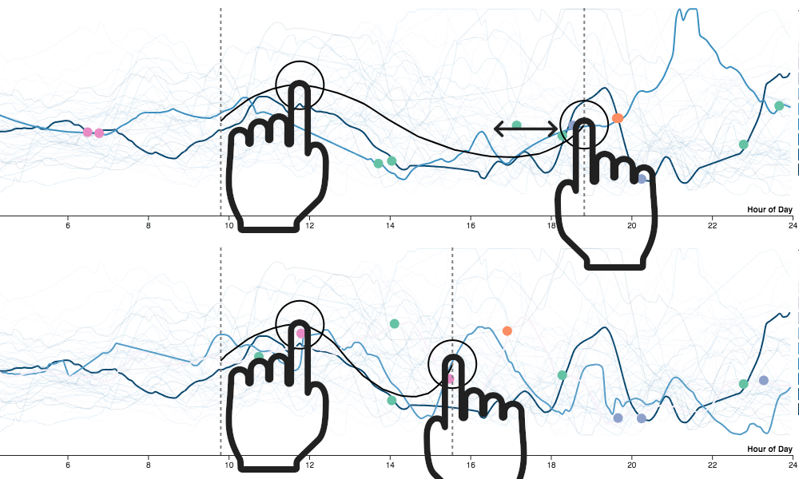
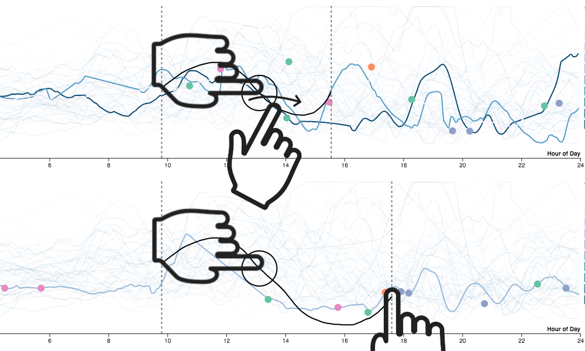
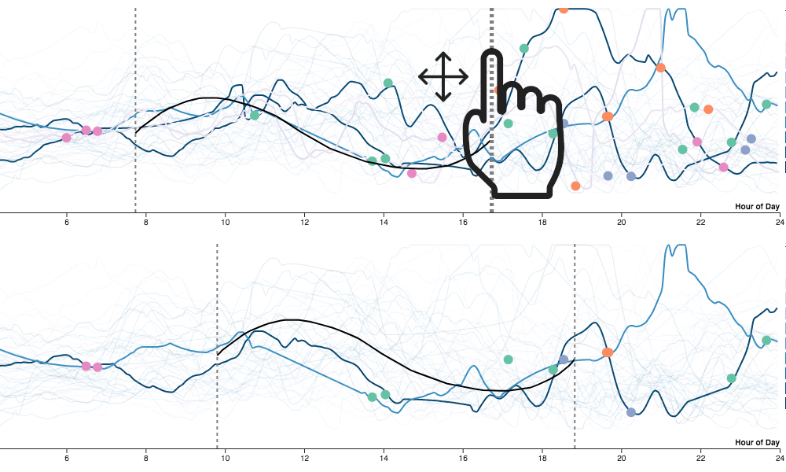
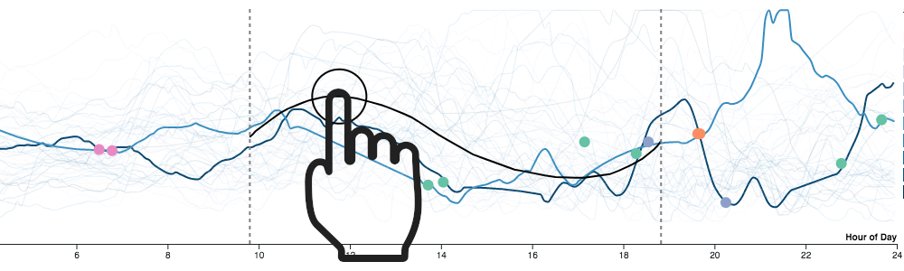

InterSketch lets you find patterns in time-series data by drawing
an example curve directly on the chart, instead of writing a
query. The sketch is compared against every series using dynamic
time warping, and matching curves are highlighted while the rest
fade into the background.
Sketch
Draw over the chart with your finger or mouse. Boundary lines mark
the
before, during, and after regions of
your query.
Scale & shift
Pinch to resize the sketch, or press and drag a boundary line to
shift the whole query in time or value.
Anchor points & events
Press along the sketch to drop an anchor point. Double-tap an
anchor to turn it into an event (e.g. a meal), which restricts
matches to curves with that same event nearby.
Refine segments
Hold two anchor points and drag one toward the other to stretch or
shrink the segment between them, or trace over a segment to
re-sketch just that part. Swipe with three fingers over a segment
to delete it.

Stretching a segment between two anchor points.

Re-sketching a segment in place.

Dragging a boundary line shifts the whole sketch.

Pressing the curve creates an anchor point.
Read the paper:
InterSketch: Interactive Sketched Queries For Time-Series
Data.